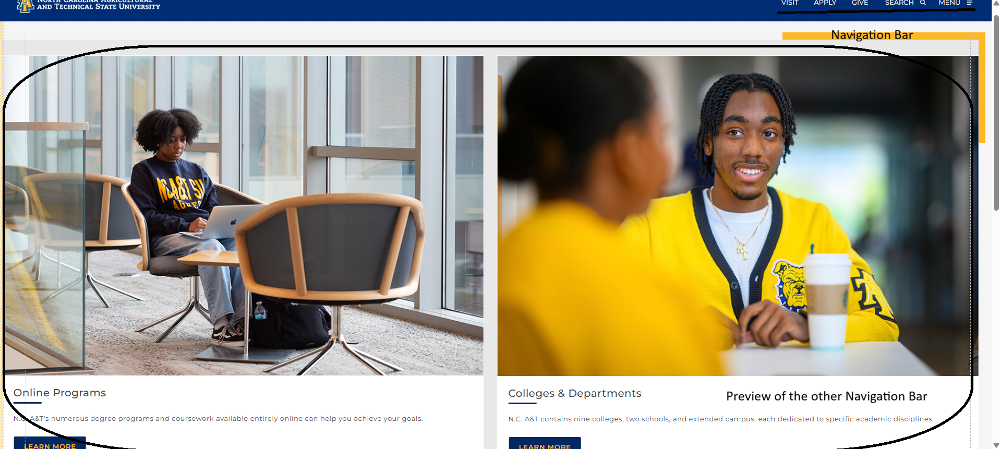
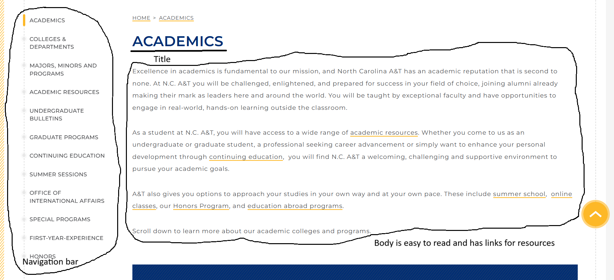

Academics
The target audience is incoming and current students, who wants to know about the majors and minors offered at NCAT and academic resources.
This site is a Hierachical Organization, it has two navigation bars that link to major site sections. The first navigation bar is the main one, it has site sections about applying, scheduling a campus visit, information about academics, admissions, research, campus life, and athletics. The second navigation bar is a sub-navigation that groups related information by academic at NCAT.
This site uses repetition, alignment, and proximity principles of CRAP. On the site, the bold blue font of site sections is used for every site section with the same page layout. The site follows the proximity principle by having each site section grouped with its related content.
According to the Accessibility Checker, the Audit Score is 60/100. The site had 3 cirtial issues:
The site is efficient, but when you first get on the site, there’s a slideshow that's part of the different section thats on the site once you scroll. When you scroll navigation on the left side of the it is easy to find the information that you need.
The engament is pleasant to use and appropriate for its industry because the different navigation gets straight to point and has resources for the content.
One recommendation to improve this website is for the navigation bar on the side to follow the users when they click on a page, so they can decide to go back to the main content page rather than having to click on the back button.